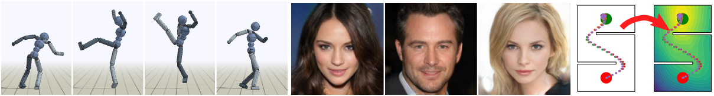

International Conference on Learning Representations (ICLR 2019)
Xue Bin PengAngjoo KanazawaSam ToyerPieter AbbeelSergey Levine
University of California, Berkeley

Abstract
Adversarial learning methods have been proposed for a wide range of applications, but
the training of adversarial models can be notoriously unstable. Effectively balancing
the performance of the generator and discriminator is critical, since a discriminator
that achieves very high accuracy will produce relatively uninformative gradients. In
this work, we propose a simple and general technique to constrain information flow in
the discriminator by means of an information bottleneck. By enforcing a constraint on
the mutual information between the observations and the discriminator's internal
representation, we can effectively modulate the discriminator's accuracy and maintain
useful and informative gradients. We demonstrate that our proposed variational
discriminator bottleneck (VDB) leads to significant improvements across three distinct
application areas for adversarial learning algorithms. Our primary evaluation studies
the applicability of the VDB to imitation learning of dynamic continuous control skills,
such as running. We show that our method can learn such skills directly from raw video
demonstrations, substantially outperforming prior adversarial imitation learning methods.
The VDB can also be combined with adversarial inverse reinforcement learning to learn
parsimonious reward functions that can be transferred and re-optimized in new settings.
Finally, we demonstrate that VDB can train GANs more effectively for image generation,
improving upon a number of prior stabilization methods.
@inproceedings{
peng2018variational,
title={Variational Discriminator Bottleneck: Improving Imitation Learning, Inverse {RL}, and {GAN}s by Constraining Information Flow},
author={Xue Bin Peng and Angjoo Kanazawa and Sam Toyer and Pieter Abbeel and Sergey Levine},
booktitle={International Conference on Learning Representations},
year={2019},
url={https://openreview.net/forum?id=HyxPx3R9tm},
}